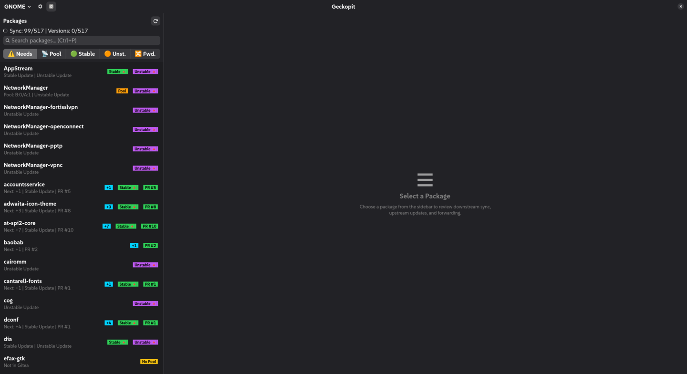
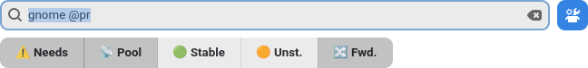
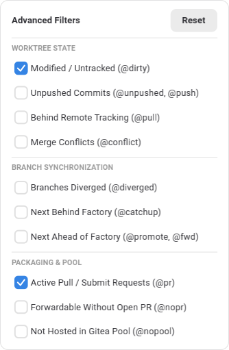
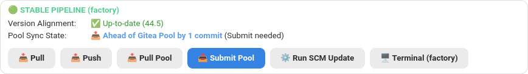
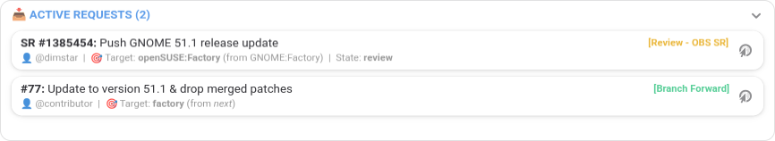
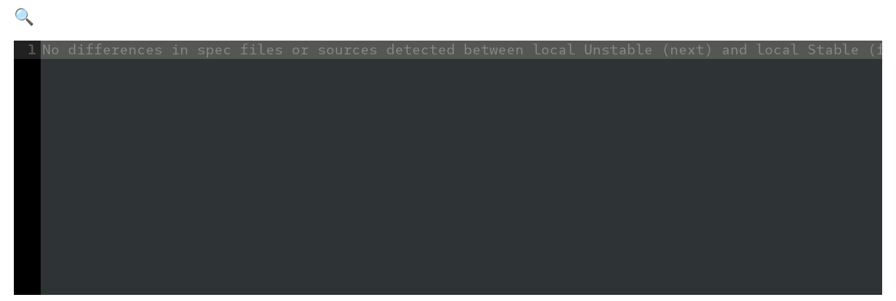
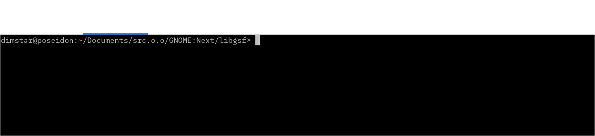
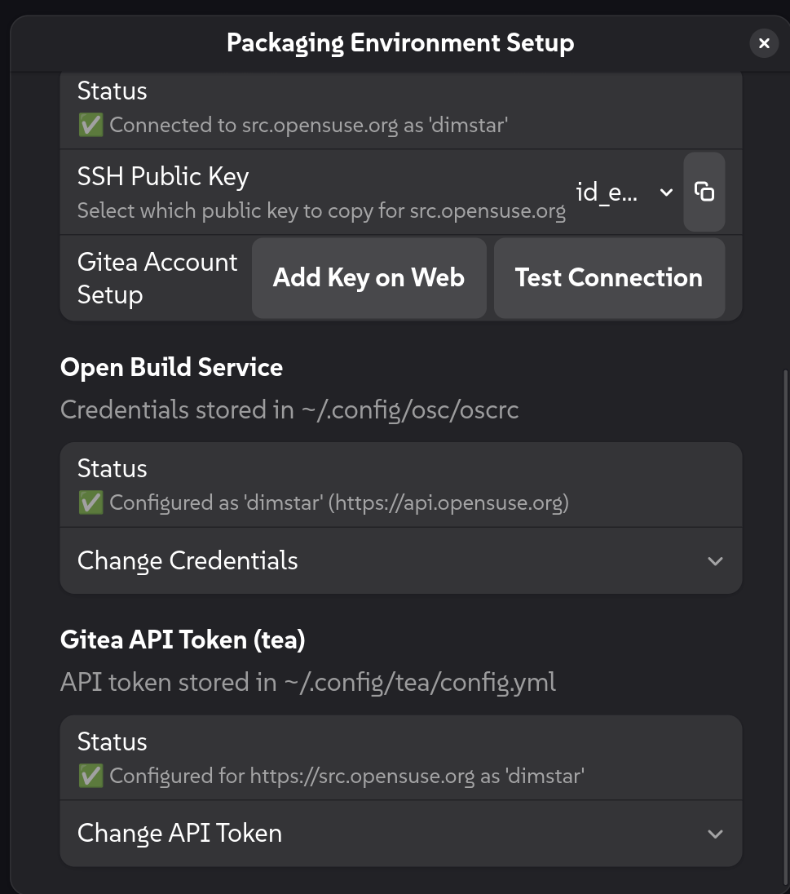

Welcome to the Geckopit User Guide. Geckopit is a graphical cockpit and command-line tool for openSUSE packagers maintaining multi-branch upstream repositories (such as GNOME:Factory and GNOME:Next).
This guide is organized by packaging tasks. Each section provides dedicated, step-by-step instructions for both the Desktop Cockpit (GUI) and the Terminal Suite (CLI).
💡 First time packaging on this machine? See the Appendix: Packaging Environment Setup & Onboarding to verify or configure Git identity, SSH keys, OBS, and Gitea in under a minute.
Geckopit provides two complementary interfaces:
geckopit): A responsive desktop application with real-time multi-branch tracking, embedded terminal tabs, 1-click update/merge/PR actions, and syntax-highlighted code diffing.geckopit-cli): A fast command-line suite for single-package inspection, batch audits, headless upgrades, and whitespace-sanitized commits.
The Cockpit is organized into four main functional regions:
Stable and Unstable), inline Meson drift repair, and code-diff viewer.Geckopit manages multiple independent packaging checkouts via Workspace Profiles (stored in ~/.config/geckopit.json).
GNOME, X11, Python). Switching profiles instantly reloads package checkouts, isolates background scan threads (scan_generation), and protects against UI lockups or stale data bleeding.⚙️ Preferences):preferences-system-symbolic) in the HeaderBar to configure profiles.➕ Add New to create a profile without modifying or overwriting existing checkouts..git/worktrees on disk. If a linked worktree exists, it automatically pre-fills stable and unstable paths and branch names.factory and next paths. Both Stable and Unstable pipeline cards are active.Maintainers managing personal packages across multiple OBS devel projects and Gitea organizations can point Geckopit at a single container directory (e.g. ~/packaging):
text
~/packaging/
├── dimstar/ (Git-managed personal packages)
│ ├── meson/ [Git]
│ └── vlc/ [Git]
├── games/ (OBS 'games' project checkout)
│ ├── toycars/ [OSC]
│ └── xmoto/ [OSC]
└── graphics/ (OBS 'graphics' project checkout)
└── shotwell/ [OSC]
Boundary-Aware Discovery: Geckopit automatically discovers packages up to 2 levels deep, stopping recursion at package boundaries (.spec with .git or .osc).
📂 dimstar / vlc, 📂 games / toycars.OSC: games) and adapt card actions to 💾 osc ci when modified.geckopit-cli --sync synchronizes all nested Git checkouts in parallel while safely leaving OSC directories untouched.Max Concurrent Scans, from 5 to 50 threads).| Badge | Meaning | Action Recommended |
|---|---|---|
Local -N |
Local checkout is behind origin by N commits. |
Fast-forward pull from origin. |
Local +N |
Local checkout has unpushed commits on disk. | Push commits to origin. |
Update Av. |
Upstream has released a newer version on release-monitoring.org. | Run package upgrade. |
Fwd. |
Developmental commits on next ready to promote to factory. |
Review diff and create PR. |
Pool Ahead |
Local Factory has commits waiting to be submitted to Gitea pool. | Run pool submission. |
Pool Behind |
Central Gitea pool has updates that need to be pulled down. | Pull down pool updates into Factory. |
No Pool |
Package is not hosted in central Gitea pool. | Informational (suppressed from default sync table). |
Conflict |
Automated sync encountered git merge conflicts. | Resolve in console drawer shell. |
SR #N |
Active OBS submit request under review in Factory staging (or awaiting pool sync). | Inspect in OBS (osc request show N) or wait for sync. |
The linked toolbar at the top of the sidebar lets you switch between focused work queues and full catalog browsing:

⚠️ Needs ON — Default):📡 Pool, 🟢 Stable, 🟠 Unst., 🔀 Fwd.) to narrow your work queue down to that specific task set (or their combined union).⚠️ Needs OFF):⚠️ Needs off switches the sidebar to browse all packages across the checkout tree.sensitive=False), and track shortcuts (Ctrl+2..Ctrl+5) are ignored.⚠️ Needs back on.Ctrl + Alt and right-click directly on the version label in the Unstable Pipeline card.🚫 Ignore Version {Version}. The package will slide out of your filtered sidebar list. (Repeat and click 🔄 Unignore to restore).Geckopit provides a three-tiered filtering architecture combining instant toolbar tracks, rich search query tokens, and a visual advanced filters popover:
Ctrl + Shift + F)
Ctrl + 1 .. 5)⚠️ Needs (Ctrl + 1): Toggles between focused Action Queue mode and full catalog Browse mode.📡 Pool (Ctrl + 2): Filters for central pool synchronization tasks (packages behind pool, unsubmitted commits, or missing from pool).🟢 Stable (Ctrl + 3): Filters for stable pipeline actions (factory upstream bumps, unpushed commits, unpulled remote commits, or local modifications).🟠 Unst. (Ctrl + 4): Filters for unstable pipeline actions (next upstream bumps, unpushed commits, unpulled remote commits, or local modifications).🔀 Fwd. (Ctrl + 5): Filters for pre-release forwarding readiness (next ahead of factory ready to merge or create PR).📡 Pool + 🔀 Fwd.) to display packages matching any of the selected tracks.@token or is:token)Type tokens directly into the search bar, with or without package name fragments:
| Category | Query Token | Description |
|---|---|---|
| Worktree State | @dirty (or @modified, @uncommitted, @untracked) |
Packages with modified or untracked local files on disk. |
@unpushed (or @push, @ahead) |
Packages with local commits waiting to be pushed to remote origin. | |
@pull (or @behind) |
Packages behind remote tracking branch (git pull needed). |
|
@conflict (or @conflicts, @merge-conflict) |
Packages with unresolved git merge conflicts. | |
| Branch Sync | @diverged |
Packages where next and factory branches have diverged history. |
@catchup (or @merge) |
Packages where next is behind factory requiring a catch-up merge. |
|
@promote (or @fwd, @forward) |
Packages where next is ahead of factory without an open PR. |
|
| Packaging & Pool | @pr (or @prs, @pullrequest) |
Packages with active Gitea Pull Requests or pending OBS Submit Requests. |
@nopr (or @unsubmitted) |
Packages forwardable from next to factory without an open PR. |
|
@pool |
Packages that are ahead or behind the central openSUSE Gitea pool. | |
@nopool (or @not-in-pool) |
Packages not hosted in the central Gitea pool. | |
@outdated (or @supersede, @outdated-sr) |
Packages with outdated pending submit requests ready to supersede via osc sr. | |
@sr (or @pending-sr) |
Packages with active pending or accepted OBS submit requests in openSUSE:Factory. | |
@update (or @updates, @needs-update) |
Packages with newer upstream releases on release-monitoring.org. |
gnome @pr, gtk @dirty, lib @update @pool)./ or Ctrl + P to jump to the search bar. Press Enter or Down to immediately confirm your query and focus the first matching package in the list.Ctrl + Shift + F)Click the settings icon (preferences-other-symbolic) next to the search bar (or press Ctrl + Shift + F) to open the filter menu:
.suggested-action) whenever popover filters are active.Run high-throughput parallel batch audits across all packages in your workspace:
# Default audit: Shows only packages requiring action (hides up-to-date and non-pool items)
geckopit-cli
# Upstream release monitor: Query release-monitoring.org for new stable and unstable versions
geckopit-cli -v
# Forwarding audit: List next branches with commits ready to merge to factory
geckopit-cli -f
# Gitea pool presence audit: List packages not registered in the central Gitea pool
geckopit-cli --not-in-pool
# Include packages not in central pool in the main downstream sync table
geckopit-cli --include-not-in-pool
# Filter downstream sync table strictly for packages requiring maintainer action
geckopit-cli --todo
# Central pool submission audit: Check which packages need submission to openSUSE:Factory
geckopit-cli --check-pool
# Submit package changes to openSUSE:Factory (dry-run preview)
geckopit-cli libnotify --submit-pool --dry-run
# Submit package changes to openSUSE:Factory with auto-extracted .changes description
geckopit-cli libnotify --submit-pool
# Audit against a specific workspace profile and customize worker concurrency
geckopit-cli --profile GNOME --jobs 8
# Comprehensive single-package dashboard (run inside package checkout or pass directory)
geckopit-cli zenity
# Verify maintainer environment readiness (Git identity, SSH keys, OBS, and Gitea)
geckopit-cli --check-setup
# Interactively configure missing developer credentials and keys
geckopit-cli --setup
geckopit-cli strictly validates all leading - arguments against KNOWN_OPTIONS. If you mistype a flag (e.g. geckopit-cli --c or geckopit-cli --comit), Geckopit avoids accidental fallthrough to the default dashboard or sync table, halting immediately with exit code 1 and providing intelligent suggestions:
[Error] Unrecognized option '--comit'. Did you mean '--commit'?
See 'geckopit-cli --help' for available options.
When an upstream project releases a new version, Geckopit automates the entire upgrade:
fetching new sources ➔ bumping the version in .spec ➔ extracting upstream release notes ➔ wrapping changelog bullets at standard 79 columns ➔ dropping merged patches ➔ checking for Meson dependency bumps.
Geckopit automatically adapts to how the package is maintained:
_service): Fetches upstream Git commits, drops merged patches, and updates packaging metadata..spec): Reads downloaded source archives, extracts changelogs, and updates spec files.
Update Av. badge (e.g. zenity or libgsf).4.2.0 ➔ 4.2.2).Update Next to 4.2.2 or Update Factory to 4.2.2)..changes entry at 79 columns, and dropping merged patches.Up-To-Date and illuminates the Push button.Push to push your packaging commits to origin.Stable Pipeline Card Action Buttons:
📥 Pull: Fast-forward pull remote commits from origin into your local stable checkout.📤 Push: Push committed packaging updates to remote origin.📥 Pull Pool: Merge upstream updates down from the central Gitea pool into your stable branch.📤 Submit Pool: Submit package changes from factory to openSUSE:Factory via osc sr, with automated pre-flight worktree verification, changelog diff extraction, and pending SR detection.⚙️ Run SCM Update: Execute automated package upgrade engine.🖥️ Terminal (factory): Launch a dedicated console drawer tab navigated to the package's stable worktree.Run geckopit-cli --upgrade directly inside the package directory:
# Upgrade package to target revision (default: @PARENT_TAG@)
geckopit-cli --upgrade 4.2.2
# Or simulate the entire upgrade without modifying any files (dry-run)
geckopit-cli --upgrade 4.2.2 --dry-run
--check-patches)When maintaining packages with multiple downstream patches, verifying whether patches apply cleanly against a newly downloaded archive or rebased tree previously required manual quilt setup, extracting large archives, and managing quilt stacks.
Geckopit provides a built-in sequential patch verification engine:
# Verify downstream patches against the upstream source in strict .spec order
geckopit-cli --check-patches
# Or run against a specific package from anywhere
geckopit-cli webkitgtk --check-patches
# Display detailed SLE patch conflict traces beneath the summary
geckopit-cli --check-patches --sle
geckopit-cli --check-patches --verbose
# Interactively rebase a failing downstream patch in-place without quilt
geckopit-cli --rebase-patch
# Target a specific patch by name
geckopit-cli --rebase-patch g-s-d-skip-donation.patch
# Rebase failing SLE patches (or auto-targets SLE if openSUSE patches are clean)
geckopit-cli --rebase-patch --sle
# Or drop into a scratch subshell instead of launching an editor
geckopit-cli --rebase-patch --shell
--rebase-patch)When a patch fails due to upstream refactoring or shifted context, running quilt setup creates messy .pc directories, unpacks gigabytes of archives, and requires manual copying and directory deletions.
geckopit-cli --rebase-patch replaces the entire quilt workflow with a native, zero-setup Git scratch workspace:
--sle)./tmp, replaying preceding patches in .spec declaration order. For SLE patches, all openSUSE patches are replayed first, followed by any preceding clean SLE patches..rej) and displays them in full color in the terminal.$GIT_EDITOR ➔ core.editor ➔ $VISUAL ➔ $EDITOR ➔ vi/vim), opening vim -O file.c file.c.rej side-by-side when using Vim. If --shell is supplied, drops into an interactive scratch subshell.[1/N], [2/N]), keeping exactly 2 clean vertical splits open at any time without overflowing the screen.git diff, preserves the original patch header / description / bug references (bsc#...), updates the patch file on disk, records - Rebase {patch}. in *.changes (cleanly appending to an in-flight upgrade entry or invoking osc vc), runs geckopit-cli --check-patches, and cleans up all scratch files..spec file.Key Verification Principles:
Patch0 ➔ Patch1 ➔ Patch2), allowing dependent patches to chain on top of earlier modifications..spec declarations (Source0 / Source) and macro expansions rather than filesystem timestamps. If downstream patches target files inside subprojects or vendor tarballs (e.g. subprojects/gvc in gnome-shell), matching members from declared secondary archives (Source1, Source2) are automatically unpacked into target directories before testing patches.SLE-Only Patch Intelligence & Quiet Summary: Failure modes are differentiated into genuine code conflicts (conflict) vs missing auxiliary files (missing_file). Distro-specific SLE patches (Patch1000+, %if !0%{?is_opensuse}, %if 0%{?sle_version}) are evaluated quietly in a compact summary line without halting the main pre-flight check or blocking openSUSE upgrades:
text
🎉 All 4 openSUSE downstream patch(es) applied cleanly in sequence!
ℹ️ SLE status: 4/10 apply cleanly (6 conflict against new upstream).
Pass --sle or --verbose to view the exact failing files and diff traces for SLE patches.
Unconditional SLE-Tagged Safety: Patches preceded by # PATCH-*-SLE comments that are applied unconditionally across openSUSE in %prep remain classified as openSUSE patches and are verified in the primary blocking check.
geckopit-cli --check-patches. The engine verifies in ~0.1s without needing directory teardowns, .pc deletions, or manual quilt resets!geckopit-cli --upgrade automatically triggers this pre-flight check after dropping merged patches, immediately alerting you if any remaining downstream patch needs rebasing before you commit.Upstream projects often bump minimum dependency constraints in meson.build, CMakeLists.txt, configure.ac, or pyproject.toml without maintainers noticing. Geckopit inspects the .spec file to identify active build systems (supporting declarative BuildSystem: tags, build invocation macros, %pyproject_wheel, and BuildRequires), and audits upstream declarations against your .spec BuildRequires: (including %{python_module ...}).
When a package has dependency drift, a compact yellow warning banner appears on the detail card:
text
⚠️ Meson Drift: 1 unversioned [🔧 Fix in .spec]
Hover over the banner or right-click to view the exact requirements.
🔧 Fix in .spec.BuildRequires: declaration in the .spec file (or updates the corresponding %define macro if defined), appends the standard changelog entry (- Update version dependencies according to meson.build.), and refreshes the view.Audit and fix dependencies directly from your shell:
# Audit dependencies against .spec BuildRequires
geckopit-cli --audit-deps
# Automatically update .spec BuildRequires / %define macros and record changelog
geckopit-cli --fix-deps
Sample Output (--audit-deps):
=> Auditing Meson dependencies for 'zenity'...
⚠️ Meson Dependency Drift Detected:
• pkgconfig(libadwaita-1) >= 1.2 (spec currently has unversioned BuildRequires)
💡 Recommended Action: Update BuildRequires in zenity.spec to match upstream requirements.
During development cycles, maintainers test pre-releases on next before promoting them to factory, and submit stabilized updates from factory to openSUSE:Factory.
Geckopit unifies Gitea Pull Requests and OBS Submit Requests (SRs) into a single, interactive collapsible card located directly below the pipeline cards:

📥 ACTIVE REQUESTS (N): When both Gitea PRs and OBS SRs exist.📥 ACTIVE SUBMIT REQUEST (1): When an in-flight OBS submit request is under evaluation in Factory.📥 ACTIVE PULL REQUESTS (N): When open Gitea pull requests are present.SR #1385454), submit message subject, creator (@author), target project (openSUSE:Factory), source project (GNOME:Factory), and status pill ([Review - OBS SR] in amber or [Accepted - OBS SR] in soft green).https://build.opensuse.org/request/show/<ID> in your default browser, accompanied by an in-app Adw.Toast confirmation banner.osc request show <ID>).#77), title, author, target branch, and [Branch Forward] badge for developmental branch promotions.https://src.opensuse.org/.../pulls/<ID> in your browser with an Adw.Toast confirmation.geckopit-cli --merge-pr <ID>).
🔀 Fwd. track filter (or press Ctrl+5).Ahead by 1 commits).next and factory.edit-copy-symbolic (📋 Copy) icon in the diff header to copy the raw Git patch directly to your clipboard, confirmed by a floating toast notification.Ctrl + F inside the diff viewer to search text, symbols, or patch lines with live match highlighting and cycling (Enter / Shift + Enter).Create Pull Request on the Pipeline card:Update to version 4.2.2) and extracts the newly added .changes entries directly into the PR description body.Submit Pull Request to publish the PR on Gitea.Audit forwardable branches and pull request states:
# List all checkouts with developmental commits on next ahead of factory
geckopit-cli --forward
# Include active Gitea pull request status
geckopit-cli --forward --pr
# Only display packages ready for forward that do NOT yet have an active PR
geckopit-cli --forward --no-pr
Maintainers routinely review and incorporate contributions from external submitters or check open PR status across their workspace:
# List open PRs for the current package (or workspace-wide overview from the root)
geckopit-cli --list-prs
# List open PRs for a specific package from anywhere
geckopit-cli webkitgtk --list-prs
# Fetch and merge a contributor PR onto your active branch HEAD
geckopit-cli --merge-pr 24
# Merge and squash multi-commit PRs into a single atomic commit
geckopit-cli --merge-pr 24 --squash
# Stage PR changes without auto-committing (for review or manual touch-ups)
geckopit-cli --merge-pr 24 --no-commit
Key PR Merge Capabilities:
pull/<ID>/head directly from origin without needing contributor fork URLs or commit SHAs.next ➔ factory or applying a clean contributor branch), merges using git merge --ff-only, preserving 100% of original commit hashes, attribution, and existing GPG signatures without prompting for maintainer keys. For non-fast-forward merges, creates clean merge commits with PR commits intact as Parent 2 in Git history..changes headers (LC_ALL=POSIX date) using explicit English weekday and month tables, ensuring date ordering validation and redated headers are 100% immune to regional desktop locale settings (e.g. de_CH.UTF-8)..spec files for duplicate Patch<N>: numbers (e.g. conflicting Patch2: additions) and safely halts before committing, leaving changes staged for maintainer review with git commit -c FETCH_HEAD.--list-prs queries _ObsPrj to report whether a package PR is forwarded individually or bundled into a multi-package release group (e.g. pr-manage combine).When developmental updates on factory are ready for integration into the distribution, submit them to openSUSE:Factory with automated pending request detection:
# Workspace-wide audit: Identify which packages truly need submission to openSUSE:Factory
geckopit-cli --check-pool
# Inspect pending submit requests for an individual package
geckopit-cli libnotify --check-pool
# Submit package changes to openSUSE:Factory (dry-run simulation)
geckopit-cli libnotify --submit-pool --dry-run
# Submit package changes with auto-extracted .changes description
geckopit-cli libnotify --submit-pool
# Submit with a custom message
geckopit-cli libnotify --submit-pool -m "Update to version 0.8.9"
# Interactively submit all unsubmitted workspace packages at once
geckopit-cli --submit-pool --all
Key Submission Capabilities:
/request?view=collection&project=openSUSE:Factory&states=review,new&types=submit) in ~1.8 seconds total, cross-referencing all 500+ packages in memory.⏳ Pending SR #1385454 (review)).src.opensuse.org/pool/<pkg>.git.GNOME:Next on next), Geckopit automatically notifies you and routes the submission to your configured stable checkout (GNOME on factory), preventing developmental code from leaking into Factory.<scmsync> tags, automatically guiding maintainers toward Gitea Pull Requests once openSUSE:Factory migrates to Git.Synchronize your local workspace trees with remote tracking branches across all profile checkouts.

🔄 Sync Workspace button in the HeaderBar.✅ Synced 12 package(s): glib2, gtk4, gvfs, mutter...✅ Workspace is already up to date⚠️ Workspace sync encountered warnings or conflicts (glib2, gtk4)Run workspace synchronization from the command line:
# Parallel fast-forward workspace synchronization
geckopit-cli --sync
# Fetch remote objects only without merging
geckopit-cli --fetch
Geckopit includes a modernized packaging commit helper (replacing legacy gc.sh). It ensures clean Git history by sanitizing trailing whitespace and preventing review artifacts from being accidentally committed.
🖥️ Terminal (factory): Launches an embedded console drawer tab navigated to the package's local stable worktree.🖥️ Terminal (next): Launches an embedded console drawer tab navigated to the package's local unstable worktree.Run geckopit-cli --commit inside any package directory:
# Stages packaging files, strips trailing whitespace, and pre-fills $EDITOR with .changes diff
geckopit-cli --commit
# Commit without opening an interactive editor (uses .changes diff directly)
geckopit-cli --commit --no-edit
Defensive Protections:
.spec, .changes, and packaging files before staging.*.changes and pre-populates your $EDITOR commit template.Power users never need to reach for the mouse. Geckopit provides full keyboard control with defensive input guards:
| Shortcut | Action | Scope / Context |
|---|---|---|
/ or Ctrl + P |
Focus the package search entry | Anywhere in Cockpit |
Enter or Down |
Confirm search and select first matching package | Inside search entry |
j or Down |
Step to the next package in the list | Package list navigation |
k or Up |
Step to the previous package in the list | Package list navigation |
Ctrl + 1 |
Toggle Action Queue vs. Catalog Browse mode | Sidebar toolbar |
Ctrl + 2 |
Toggle 📡 Pool Sync track filter | Action Queue mode |
Ctrl + 3 |
Toggle 🟢 Stable Updates track filter | Action Queue mode |
Ctrl + 4 |
Toggle 🟠 Unstable Updates track filter | Action Queue mode |
Ctrl + 5 |
Toggle 🔀 Forwarding track filter | Action Queue mode |
Ctrl + Shift + F |
Open Advanced Filters popover menu | Anywhere in Cockpit |
Ctrl + F |
Activate inline search inside the diff viewer | When viewing diffs |
Ctrl + + / - / 0 |
Zoom console terminal font (with floating % badge) |
In terminal drawer |
F5 or Ctrl + R |
Refresh currently selected package (instant priority scan) | Active package |
Ctrl + Shift + R |
Rescan all packages in the workspace | Global |
Ctrl + Shift + S |
Fetch & Sync workspace (git-project-sync) |
Global |
F1 |
Open User Guide in browser | Anywhere in Cockpit |
Note: Defensive input guards prevent shortcuts from intercepting keystrokes while you are actively typing inside an embedded terminal shell or text field.
When setting up Geckopit on a new machine, laptop, or Flatpak installation, four developer pillars must be configured to fetch sources, manage pull requests, and commit changes:
user.name and user.email used in commit headers.gitea@src.opensuse.org.~/.config/osc/oscrc.tea): An API token configured in ~/.config/tea/config.yml.Click the Setup & Verification button (avatar-default-symbolic) on the right side of the HeaderBar to open the interactive setup assistant:

src.opensuse.org/user/settings/keys in your browser and paste the key.gitea@src.opensuse.org without freezing the interface.~/.config/osc/oscrc with 0600 permissions.tea):src.opensuse.org/user/settings/applications.~/.config/tea/config.yml.Verify or configure your environment headlessly or step-by-step from your terminal:
# 1. Non-destructive readiness check across all 4 pillars
geckopit-cli --check-setup
# 2. Interactive step-by-step onboarding wizard
geckopit-cli --setup
The interactive wizard tests existing settings, offers to generate keys and configurations, displays clickable web links, and automatically validates connections before concluding.
For technical architecture, command-line reference, and helper internals, see MAINTAINERS_GUIDE.md.